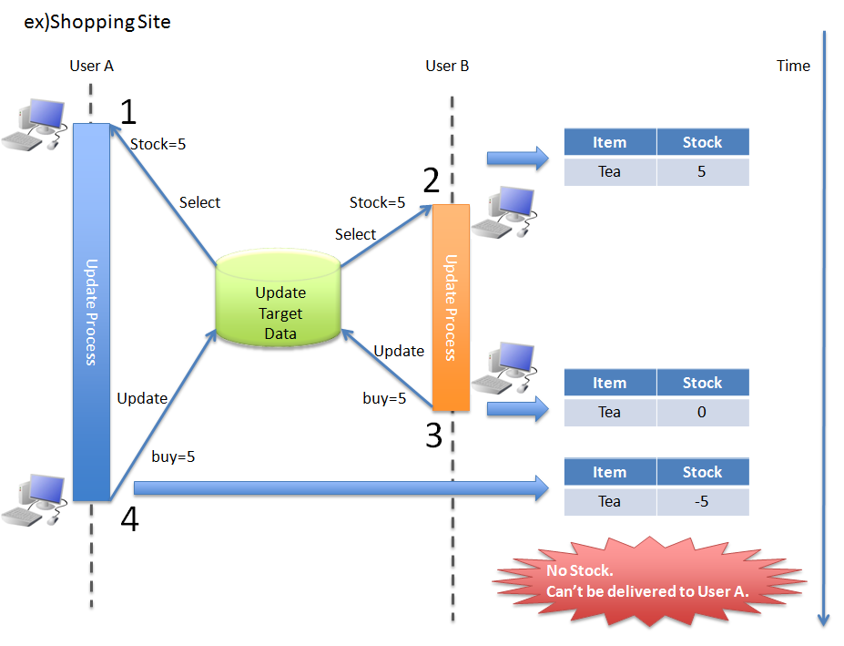
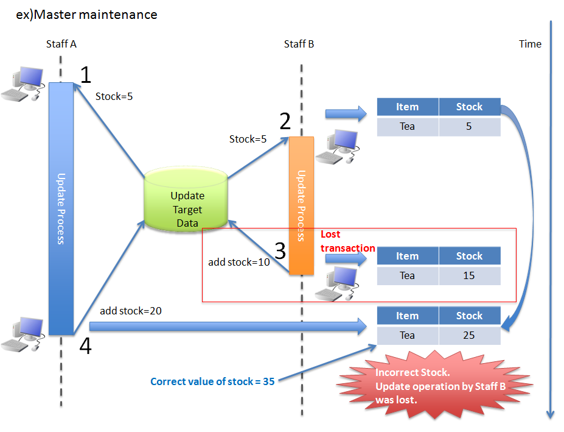
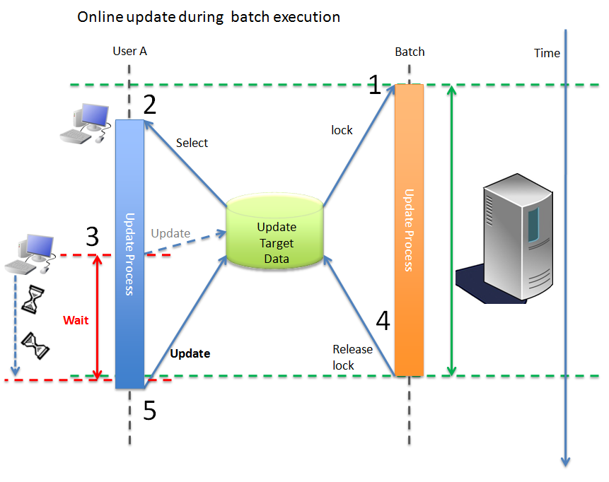
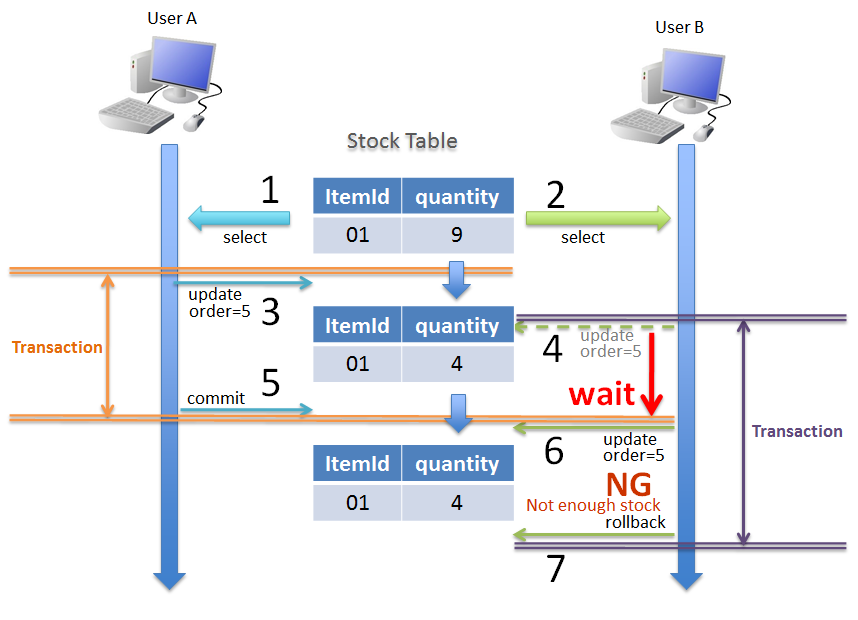
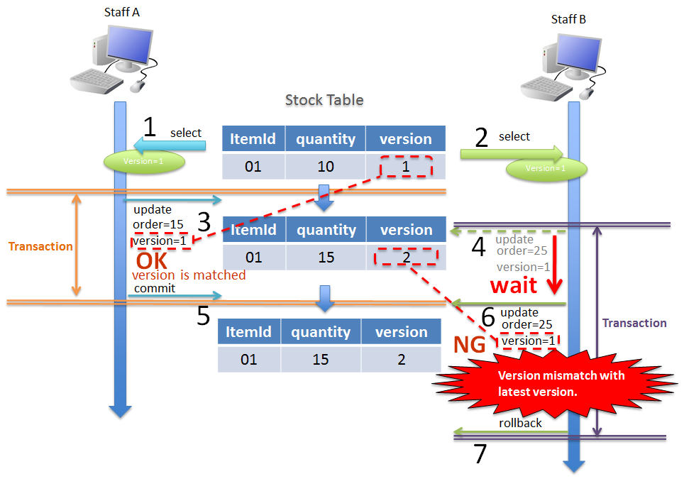
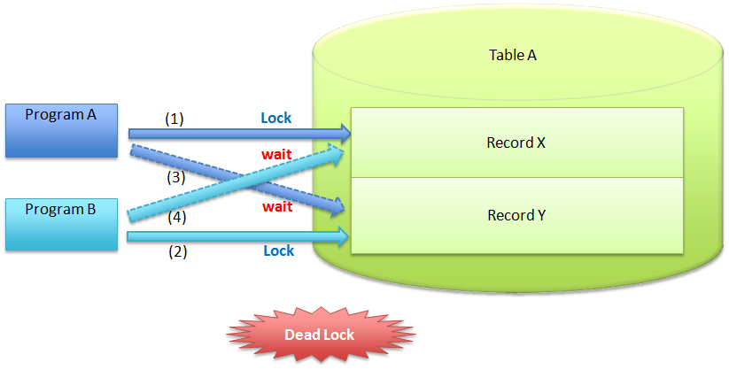

6.3. 排他制御¶
6.3.1. Overview¶
排他制御とは、複数のトランザクションから同じデータに対して、同時に更新処理が行われる際に、データの整合性を保つために行う処理のことである。
複数のトランザクションから同じデータに対して、同時に更新処理が行われる可能性がある場合は、基本的に排他制御を行う必要がある。 ここで言うトランザクションとは、かならずしもデータベースとのトランザクションとは限らず、ロングトランザクションも含まれる。
Note
ロングトランザクションとは
データの取得とデータの更新を、別々のデータベーストランザクションとして行う際に発生するトランザクションのことである。
具体例としては、取得したデータを編集画面に表示し、画面で編集した値をデータベースに更新するようなアプリケーションで発生する。
6.3.1.1. 排他制御の必要性¶
まず、排他制御の必要性を理解してもらうために、排他制御を行わなかった際に発生する問題について、具体例を3つ挙げて説明する。
6.3.1.1.1. Problem1¶
ここでは、ショッピングサイトにて、ユーザからTeaの注文を受け付ける場合の例を示す。

項番
UserA
UserB
説明
〇
-
User Aが、商品画面にてTeaの在庫が5個あることを確認する。
-
〇
User Bが、商品画面にてTeaの在庫が5個あることを確認する。
-
〇
User BがTeaを5個注文する。DB上のTeaの在庫を-5し、Teaの在庫は0になる。
〇
-
User AがTeaを5個注文する。DB上のTeaの在庫を-5し、Teaの在庫は-5となる。
User Aの注文は受け付けられたが、実際の在庫が無いため、謝りの連絡を入れることになる。テーブルで管理しているTeaの在庫数についても、実際のTeaの在庫数と異なる値(マイナス値)になってしまう。
{kind=link}
6.3.1.1.2. Problem2¶
ここでは、ショッピングサイトでTeaの在庫数を管理するスタッフが、Teaの在庫数を表示し、仕入れたTeaの数をクライアントで計算して、Teaの在庫数を更新する場合の例を示す。

項番
UserA
UserB
説明
〇
-
Staff AがTeaの在庫が5個あることを確認する。
-
〇
Staff BがTeaの在庫が5個あることを確認する。
-
〇
Staff BがTeaを10個仕入れ、在庫数をクライアントで5＋10=15個と計算して更新する。
〇
-
Staff AがTeaを20個仕入れ、在庫数をクライアントで5＋20=25個と計算して更新する。
3の処理で追加した10個の仕入れが無くなってしまい、実際の在庫数(35個)と合わなくなってしまう。
{kind=link}
6.3.1.1.3. Problem3¶
ここでは、バッチ処理によってロックされているデータに対して、オンライン処理で更新する例を示す。

項番
UserA
Batch
説明
-
〇
Batchがテーブルの更新対象の該当行（ここでは仮に全ての行とする。）をロックし、他の処理で更新できないようにする。
〇
-
User Aが更新情報を検索する。この時点でBatchはコミットされていないため、Batch更新前の情報が取得できる。
〇
-
User Aが更新要求をするが、Batchにロックされているため、更新が待たされる。
-
〇
Batchが処理を終えてロックを解放する。
〇
-
User Aの待たされていた更新処理が、実行可能となり更新処理を実行する。
User AはBatch終了を待たされた後に、更新処理を実行する。しかし、User Aの取得した元のデータは、Batchの更新前のデータであり、Batchで更新した情報を上書く可能性がある。また、Batch時間はオンライン処理と比べると長いものが多く、ユーザが待たされる時間が長くなる。
{kind=link}
6.3.1.2. トランザクションの分離レベルによる排他制御¶
ANSI/ISO SQL標準では、トランザクションの分離レベル（各トランザクションがそれぞれどの程度互いに影響を及ぼし合うか）を表す指標を定義している。 以下に、トランザクションの分離レベルを4つ示す。併せて、各分離レベルで起こりうる現象について説明する。
項番
|
分離レベル
|
ダーティ・リード
DRITY READ
|
再読込不可能読取
NON-REPEATABLE READ
|
ファントム・リード
PHANTOM READ
|
|---|---|---|---|---|
1.
|
未コミット読込
READ UNCOMMITTED
|
有 |
有 |
有 |
2.
|
コミット済読込
READ COMMITTED
|
無 |
有 |
有 |
3.
|
再読込可能読取
REPEATABLE READ
|
無 |
無 |
有 |
4.
|
直列化
SERIALIZABLE
|
無 |
無 |
無 |
Tip
ダーティ・リード（DRITY READ）
まだコミットされていないトランザクションが書き込んだデータを、別のトランザクションが読み込む現象のことである。
Tip
再読込不可能読取（NON-REPEATABLE READ）
同一トランザクション内で同じレコードを2度読み込むような場合、1度目と2度目の読み込みの間に他トランザクションがコミットすると、1度目に読み込んだ内容と2度目に読み込んだ内容が異なる可能性がある。 複数回の読み込みの結果が、他のトランザクションのコミットのタイミングによって変わることである。
Tip
ファントム・リード（PHANTOM READ）
同一トランザクション内で、同じレコードを2回読み込む間に、他のトランザクションがレコードを追加、または削除することにより、2回目の読み込みで1回目と取得レコード数（内容）が異なることである。
データの整合性を保ちつつ、分離性と同時実行性のバランスをとる場合、データベースのロック機能を使用して排他制御を行う必要がある。以下に、データベースのロック機能について説明する。
6.3.1.3. データベースのロック機能による排他制御¶
データベース上で管理されているデータの整合性を保つため
更新処理が競合しないようにするため
ロックの種類¶ 項番
ロック種類
適用ケース
特徴
RDBMSによる自動的なロック
データの更新条件として、データの整合性を保証するために必要な条件を指定できる場合。
同一データに対する同時実行数が少なく、更新処理も短い時間でおわる場合。
チェックと更新処理を一つのSQLで実行するため、効率的である。
楽観ロックに比べ、データの整合性を保証するための条件を個別に検討する必要がある。
楽観ロック
事前に取得したデータが他のトランザクションによって更新されていた場合に、更新内容を確認させる必要がある場合。
同一データに対する同時実行数が少なく、更新処理も短い時間でおわる場合。
取得したデータに対して、他のトランザクションからの更新が行われていないことが保証される。
テーブルにVersionを管理するためのカラムを定義する必要がある。
悲観ロック
長い時間ロックされる可能性があるデータに対して更新する場合。
楽観ロックが使用できない(Versionを管理するためのカラムが定義できない)ため、処理としてデータの整合性チェックを行う必要がある場合。
同一データに対する同時実行数が多く、更新処理も長い時間実行される可能性がある場合。
他のトランザクションの処理結果によって処理が失敗する可能性がなくなる。
悲観ロックを取得するためのselect文を発行する必要があるので、その分コストがかかる。
Note
ロックの種類の採用基準について
どの手法を採用するかについて、アーキテクトが、機能要件および性能要件を考慮して決定すること。
画面にデータを戻し、画面上でデータを変更するような、データベースとのトランザクションが切れて、次のトランザクションでデータが変わっていないことを保証するためには、楽観ロックが必要となる。
1トランザクション内でロックをかける必要がある場合は、悲観ロックと楽観ロックの両方で実現できるが、悲観ロックを使用した場合、データベース内のロック制御処理が行われるため、データベース内の処理コストが高くなる可能性がある。特に問題がない場合は、楽観ロックの方がよい。
更新頻度が高い処理で、1トランザクション内で多くのテーブルを更新する場合は、楽観ロックを使用すると、ロックを取得するための待ち時間は最小限に抑えることが出できるが、途中で排他エラーとなる可能性があるため、エラーが発生するポイントが増える。 悲観ロックを使用すると、ロックを取得するまでの待ち時間が長くなる可能性はあるが、ロックを取得した後の処理で排他エラーが発生することはないため、エラーが発生するポイントが減る。
Tip
業務トランザクションについて
実際のアプリケーション開発では、業務フローレベルのトランザクションに対して、排他制御が必要になる場合もある。 業務フローレベルのトランザクションとなる代表例としては、旅行代理店のカウンタで、お客様と話をしながら予約作業を進めていく際に使用するアプリケーションがあげられる。
旅行予約を行う場合、鉄道、宿泊施設、さらに追加プランなどを話しながら決めていくことになる。 その際に、予約することに決めた宿泊施設や追加プランが、他の利用者に予約されないようにする仕組みが必要になる。 このような場合は、テーブルにステータスを持たせ、仮予約 -> 予約 のように更新し、仮予約中の場合も、他の利用者から更新されないようにする必要がある。
業務トランザクションに対する排他制御については、業務設計や機能設計として検討・設計すべき箇所になるので、本節の説明範囲からは省いている。
6.3.1.3.1. データベースの行ロック機能による排他制御¶
項番
データベース
確認Version
デフォルト設定時のロック
備考
Oracle
11
行ロック
ロック分メモリ使用量が増大する。
PostgreSQL
9
行ロック
メモリ上に変更された行の情報を記憶しないので、同時にロックできる行数に、上限はない。ただし、テーブルに書き込むため、定期的にVACUUMしなければならない。
DB2
9
行ロック
ロック分メモリ使用量が増大する。
MySQL InnoDB
5
行ロック
ロック分メモリ使用量が増大する。
以下に、具体例を示す。シナリオは、以下の通りである。
ショッピングサイトでUser A,User Bともに同じ商品の購入画面を同時に表示する。 その際に、Stock Tableから取得した在庫数も表示されている。
買いたい商品を5個ずつ同時に購入したが、少しUserAの方が早く購入ボタンを押下したため、User Aが先に購入し、User Bが次に購入する。
項番
UserA
UserB
説明
〇
-
User Aが、商品の購入画面を表示する。在庫数が100個で画面に表示されている。
select quantity from Stock where ItemId = '01'
-
〇
User Bが、商品の購入画面を表示する。在庫数が100個で画面に表示されている。
select quantity from Stock where ItemId = '01'
〇
-
User Aが、ItemId=01の商品を5個購入する。Stock Tableから個数を-5する。
Update Stock set quantity = quantity - 5 where ItemId='01' and quantity >= 5
-
〇
User Bが、ItemId=01の商品を5個購入する。Stock Tableから個数を-5しようとするが、User Aのトランザクションが終了していないので、User Bの購入処理が待たされる。
〇
-
User Aのトランザクションをコミットする。
-
〇
-
〇
User Bのトランザクションをコミットする。
Note
ポイント
SQL内で減算(
quantity - 5)と、更新条件(and quantity >= 5)の指定を行うことが、ポイントとなる。
{kind=link}
quantity >= 5を満たさないので、更新件数が0件となる。 Note
ポイント
アプリケーションで更新件数をチェックし、想定件数と異なる場合にエラーを発生させ、トランザクションをロールバックすることが、ポイントとなる。
{kind=link}
この方法でロックする場合、参照した情報が変わっていても条件次第で処理を進めることができ、かつ、データベースの機能によってデータの整合性を保証することができる。
6.3.1.3.2. 楽観ロックによる排他制御¶
Note
Versionカラムとは
レコードの更新回数を管理するためのカラムで、レコード挿入時に0を設定し、更新成功時にインクリメントしていく楽観ロック用のカラムである。 Versionカラムは、数値以外に最終更新タイムスタンプで代用することもできる。 しかし、タイムスタンプを用いると、同時に処理が実行された際の、一意性が保証されない。 そこで、確実な一意性を求める場合、Versionカラムは、数値を使用する必要がある。
Warning
楽観ロックを行う場合、IDとVersion以外の条件を加えて更新・削除するのは適切でない。 なぜなら更新できなかった場合に、Versionが一致しないことが理由なのか、別の条件に一致しないのが理由なのか、判断できないためである。 更新条件として別の条件がある場合は、事前の処理として条件を満たしているか、チェックを行う必要がある。
具体例を、以下に示す。シナリオは、以下の通りである。
ショッピングサイトの在庫数を管理するスタッフ(Staff A, Staff B)が、それぞれ商品を仕入れる。Staff Aが5個、Staff Bが15個仕入れたものとする。
仕入れた商品を、在庫管理システムに反映するために、在庫管理画面を表示する。その際、在庫管理システムで管理されている在庫数が表示される。
それぞれ表示された在庫数に対して、仕入れた数を加算した値を更新フォームに入力し、更新を行う。

項番
Staff A
Staff B
説明
〇
-
Staff Aが、商品の在庫管理画面を表示する。在庫数は10個と画面に表示されている。参照したデータのVersionは “
1” である。
-
〇
Staff Bが、商品の在庫管理画面を表示する。在庫数は10個と画面に表示されている。参照したデータのVersionは “
1” である。
〇
-
Staff Aが、画面に表示されていた在庫数10に対して、仕入れた5個を加算し、変更後の在庫数を15個で更新する。更新条件として、参照したデータのVersionを含める。
UPDATE Stock SET quantity = 15, version = version + 1 WHERE itemId = '01' and version = 1
-
〇
Staff Bが、画面に表示されていた在庫数10に対して仕入れた15個を加算し、変更後の在庫数を25個で更新しようとするが、Staff Aのトランザクションが終了していないので待たされる。更新条件として、参照したデータのVersionを含める。
〇
-
Staff Aのトランザクションをコミットする。 この時点で、Versionは 2 になる。
〇
-
Staff Aのトランザクションがコミットされたため、4で待たされていたStaff Bの更新処理が再開する。この時、Stock TableのデータのVersionが “
2” になっているため、更新結果が0件となる。更新結果が0件の場合は排他エラーとする。UPDATE Stock SET quantity = 25, version = version + 1 WHERE itemId = '01' and version = 1
〇
-
Staff Bのトランザクションをロールバックする。
{kind=link}
Note
ポイント
SQL内でVersionのインクリメント( version + 1 )と、更新条件( and version = 1 )の指定を行うことが、ポイントとなる。
6.3.1.3.3. 悲観ロックによる排他制御¶
項番 |
データベース |
悲観ロック方法 |
|---|---|---|
Oracle |
FOR UPDATE |
|
PostgreSQL |
FOR UPDATE |
|
DB2 |
FOR UPDATE WITH |
|
MySQL |
FOR UPDATE |
Note
悲観ロックのタイムアウトについて
悲観ロックには、悲観ロック取得時に他のトランザクションによってロックが取得されていた場合に、どのような動作にするかをオプションとして指定することがある。 Oracleの場合は、
デフォルトでは、
select for update [wait]となり、ロックが解除されるまで待つ。select for update nowaitとすると、他にロックされている場合は、即時にリソースビジーのエラーとなる。select for update wait 5とすると5秒待ち、5秒間ロックが解除されない場合は、リソースビジーのエラーが返却される。
DBにより機能に差はあるが、悲観ロックを使用する際は、どの手法を採用するか検討が必要である。
悲観ロックによる排他制御は、以下3ケースのいずれかに当てはまる場合に使用する。
- 更新対象のデータが複数のテーブルに分かれて管理されている。更新対象のテーブルが複数のテーブルに分かれている場合、各テーブルに対して更新が終わるまでの間に、他のトランザクションから更新がされないことを保証するために、必要となる。
- 更新処理を行う前に取得したデータの状態をチェックする必要がある。チェック処理が終わった後に、他のトランザクションから更新がされていないことを保証するために、必要となる。
- バッチ実行中にオンラインの処理が実行されることがある。バッチ処理では、実行途中に排他エラーが発生しないようにするために、更新対象となるデータのロックを一括で取得することがある。一括で取得されたロックが取得された場合、オンラインの処理が待たされる時間が長くなる可能性がある。その場合、タイムアウト時間を指定して、悲観ロックを使用するのが妥当である。
具体例を以下に示す。シナリオは、以下の通りである。
バッチ処理が既に実行済みで、オンラインで更新するデータを悲観ロックしている。
オンライン処理は10秒のタイムアウト時間を指定して、更新対象のデータのロックを取得する。
バッチ処理は5秒後(タイムアウト前)に終了する。
{kind=link}
項番
Online
Batch
説明
-
〇
バッチ処理が、オンライン処理で更新するデータの悲観ロックを取得する。
〇
-
オンライン処理が、更新対象のデータの悲観ロックを行うが、バッチ処理のトランザクションによって悲観ロックされているので待たされる。
SELECT * FROM Stock WHERE quantity < 5 FOR UPDATE WAIT 10
-
〇
バッチ処理が、データを更新する。
-
〇
バッチ処理のトランザクションをコミットする。
〇
-
バッチ処理のトランザクションがコミットされたため、オンライン処理の処理が再開する。取得されるデータはバッチ処理の更新結果が反映されているので、データ不整合が発生することはない。
〇
-
オンライン処理が、データを更新する。
〇
-
オンライン処理のトランザクションをコミットする。
{kind=link}
{kind=link}
バッチ処理とオンライン処理が競合する可能性があり、かつバッチ処理の処理時間が長くなる場合は、悲観排他のタイムアウト時間を指定することを推奨する。 タイムアウト時間については、オンライン処理の処理要件に応じて決めること。
6.3.1.4. デッドロックの予防¶
6.3.1.4.1. テーブル内でのデッドロック¶
以下(1)～(5)の流れで、複数のトランザクションから、同一テーブルのレコードに対してロックを行うと、デッドロックとなる。

項番
Program A
Program B
説明
〇
-
Program Aは、Record X に対するロックを取得する。
〇
-
Program Bは、Record Y に対するロックを取得する。
〇
-
Program Aは、Program BのトランザクションによってロックされているRecord Y に対してロックの取得を試みるが、(2)のロック状態が解放されていないので、解放待ちの状態となる。
-
〇
Program Bは、Program AのトランザクションによってロックされているRecord X に対してロックの取得を試みるが、(1)のロック状態が解放されていないので、解放待ちの状態となる。
-
-
Program AとProgram Bが、お互いに保持しているロックに対して解放待ちの状態となるため、デッドロックとなる。デッドロックが発生した場合、データベースによって検知されエラーとなる。
Note
デッドロックの解決方法について
タイムアウトやリトライ実施での解消する方法もあるが、同一テーブル上でのレコードの更新順序にルールを決めることが重要である。 1行ずつ更新する場合は、PK(PRIMARY KEY)順の若い順に更新するなどのルールを定めること。
仮にProgram AもProgram BもRecord Xから更新するというルールに準じていれば、上記テーブル内でのデッドロックの図のようなデッドロックは発生しなくなる。
{kind=link}
6.3.1.4.2. テーブル間でのデッドロック¶
項番
Program A
Program B
説明
〇
-
Program Aは、Table A の Record X に対するロックを取得する。
〇
-
Program Bは、Table B の Record Y に対するロックを取得する。
〇
-
Program Aは、Program BのトランザクションによってロックされているTable B の Record Y に対してロックの取得を試みるが、(2)のロック状態が解放されていないので、解放待ちの状態となる。
-
〇
Program Bは、Program AのトランザクションによってロックされているTable A の Record X に対してロックの取得を試みるが、(1)のロック状態が解放されていないので、解放待ちの状態となる。
-
-
Program AとProgram Bが、お互いに保持しているロックに対して解放待ちの状態となるため、デッドロックとなる。デッドロックが発生した場合、データベースによって検知されエラーとなる。
{kind=link}
Note
デッドロックの解決方法について
タイムアウトやリトライ実施での解消する方法もあるが、テーブルを跨った際も、更新順序をルール化しておくことが重要である。
仮にProgram AもProgram BもTable Aから更新するというルールに準じていれば、上記テーブル間でのデッドロックの図のような、デッドロックは発生しなくなる。
Warning
注意としては、どの方法を採用したとしても、レコードをロックする順序により、デッドロックが発生する可能性がある。 テーブル、レコードのロック順序については、ルールを決めること。
6.3.2. How to use¶
ここからは、MyBatis3を使用した排他制御の実現方法について説明を行う。
実装方法は
を確認されたい。
また、排他エラーのハンドリング方法については、
を参照されたい。
6.3.2.1. 排他制御の実装方法¶
6.3.2.1.1. RDBMSの行ロック機能¶
RDBMSの行ロック機能を使って排他制御を行う場合は、SQLの中で、
SET句に指定する更新内容
WHERE句に指定する更新条件
を意識する必要がある。
Repositoryインタフェースにメソッドを定義する。
public interface StockRepository { // (1) boolean decrementQuantity(@Param("itemCode") String itemCode, @Param("quantity") int quantity); }
項番
説明
Repositoryインタフェースに、 RDBMSの行ロック機能を使ってデータを更新するメソッドを定義する。
上記例では、在庫数を減らすためのメソッドを定義している。 在庫数の減らす事ができた場合は、
trueが返却される。
RDBMSの行ロック機能を使った排他制御が有効となるSQLを定義する。
<!-- (2) --> <update id="decrementQuantity"> <![CDATA[ UPDATE m_stock SET /* (3) */ quantity = quantity - #{quantity} WHERE item_code = #{itemCode} AND /* (4) */ quantity >= #{quantity} ]]> </update>
項番
説明
RDBMSの行ロック機能を使ってデータを更新するためのステートメント(SQL)を定義する。
上記例では、在庫数を減らすためのSQLを定義している。
RDBMSの行ロック機能を使う場合は、
他のトランザクションが同一データに対してロックを取得している場合は、 ロックが解放(コミット or ロールバック)された後にSQLが実行される。
在庫数を減らすことに成功した場合は、 RDBMSの行ロックが取得され、他のトランザクションからの更新がロックされる。
という動作になるため、データを安全に更新する事ができる。
在庫数の減算処理(
quantity = quantity - #{quantity})は、SQLの中で行う。更新条件として、「在庫数が注文数以上ある事(
quantity >= #{quantity})」を加える。
Repositoryのメソッドを呼び出し、RDBMSの行ロック機能を使用してデータを安全に更新する。
// (5) boolean updated = stockRepository.decrementQuantity(itemCode, quantityOfOrder); // (6) if (!updated) { // (7) ResultMessages messages = ResultMessages.error().add(ResultMessage .fromText("Not enough stock. Please, change quantity.")); throw new BusinessException(messages); }
項番
説明
Repositoryのメソッドを呼び出し、更新処理を行う。
Repositoryのメソッドの呼び出し結果を判定する。
falseの場合、更新条件を充たしていないため、在庫数が不足していることになる。業務エラーを発生させる。
上記例では、ビジネスルールのチェック(在庫数チェック)を排他制御しながら行っているだけなので、 更新条件を充たさない場合は、排他エラーではなく業務エラーとしている。
発生させた業務エラーは、Controllerで適切にハンドリングすること。
6.3.2.1.2. 楽観ロック¶
Entityにバージョン管理用のプロパティを定義する。
public class Stock implements Serializable { private static final long serialVersionUID = 1L; private String itemCode; private int quantity; // (1) private long version; // ... }
項番
説明
Entityにバージョン管理用のプロパティを用意する。
Repositoryインタフェースにメソッドを定義する。
public interface StockRepository { // (2) Stock findByItemCode(String itemCode); // (3) boolean updateQuantity(Stock stock); }
項番
説明
Repositoryインタフェースに、Entityを取得するためにメソッドを定義する。
Repositoryインタフェースに、楽観ロック機能を使ってデータを更新するメソッドを定義する。
上記例では、指定されたEntityの内容でレコードを更新するためのメソッドを定義している。 更新できた場合は、
trueが返却される。
マッピングファイルにSQLを定義する。
<!-- (4) --> <select id="findByItemCode" parameterType="string" resultType="Stock"> SELECT item_code, quantity, version FROM m_stock WHERE item_code = #{itemCode} </select> <!-- (5) --> <update id="updateQuantity" parameterType="Stock"> UPDATE m_stock SET quantity = #{quantity}, /* (6) */ version = version + 1 WHERE item_code = #{itemCode} AND /* (7) */ version = #{version} </update>
項番
説明
Entityを取得するためのステートメント(SQL)を定義する。
楽観ロックを使用する場合は、Entity取得時にバージョンを取得しておく必要がある。
楽観ロック機能を使ってデータを更新するためのステートメント(SQL)を定義する。
上記例では、指定されたEntityの内容でレコードを更新するSQLを定義している。
バージョンの更新(
version = version + 1)は、SQLの中で行う。更新条件として、「バージョンが変わっていない事(
version = #{version})」を加える。
Repositoryのメソッドを呼び出し、楽観ロック機能を使用してデータを安全に更新する。
// (8) Stock stock = stockRepository.findByItemCode(itemCode); if (stock == null) { ResultMessages messages = ResultMessages.error().add(ResultMessage .fromText("Stock not found. itemCode : " + itemCode)); throw new ResourceNotFoundException(messages); } // (9) stock.setQuantity(stock.getQuantity() + addedQuantity); // (10) boolean updated = stockRepository.updateQuantity(stock); if(!updated) { // (11) throw new ObjectOptimisticLockingFailureException(Stock.class, itemCode); }
項番
説明
RepositoryインタフェースのfindByItemCodeメソッドを呼び出し、Entityを取得する。
(8)で取得したEntityに対して、更新する値を指定する。
上記例では、仕入れた在庫数を加算している。
RepositoryインタフェースのupdateQuantityメソッドを呼び出し、 (8)の処理で更新したEntityを永続層(DB)に反映する。
更新結果を判定し、更新結果が
falseの場合は、 他のトランザクションによってEntityが更新されたことになるので、 楽観ロックエラー(org.springframework.orm.ObjectOptimisticLockingFailureException)を発生させる。
ロングトランザクションに対して楽観ロックを行う場合は、以下の点に注意すること。
Warning
ロングトランザクションに対して楽観ロックを行う場合は、更新時のチェックとは別に、 データ取得時にもバージョンのチェックを行うこと。
以下に、実装例を示す。
データ取得時にもバージョンのチェックを行う。
Stock stock = stockRepository.findByItemCode(itemCode); if (stock == null || stock.getVersion() != version) { // (12) throw new ObjectOptimisticLockingFailureException(Stock.class, itemCode); } stock.setQuantity(stock.getQuantity() + addedQuantity); boolean updated = stockRepository.updateQuantity(stock); // omitted
項番
説明
別のデータベーストランザクションで取得したEntityのバージョンと、(8)で取得したEntityのバージョンを比較する。
バージョンが異なる場合は、他のトランザクションによってデータが更新されているので、楽観ロックエラー(
org.springframework.orm.ObjectOptimisticLockingFailureException)を発生させる。データが存在しない(
stock == null)時の考慮も必要であり、アプリケーションの仕様に対応した実装を行う必要がある。上記例では、楽観ロックエラーとしている。
RDBMSの行ロック機能と楽観ロック機能を併用するアプリケーション場合は、以下の点に注意すること。
Warning
RDBMSの行ロック機能を利用して排他制御を行う処理と、 楽観ロック機能を利用して排他制御を行う処理が共存するアプリケーションの場合は、 RDBMSの行ロック機能を使うSQLの中で、バージョンの更新(インクリメント)が必要となる。
仮にRDBMSの行ロック機能を使って排他制御を行うSQLの中でバージョンを更新しなかった場合、 楽観ロック機能を利用して排他制御を行っているSQLでデータを上書きしてしまう可能性がある。
以下に、実装例を示す。
SQL内でバージョンを更新する。
<update id="decrementQuantity"> <![CDATA[ UPDATE m_stock SET quantity = quantity - #{quantity}, /* (13) */ version = version + 1 WHERE item_code = #{itemCode} AND quantity >= #{quantity} ]]> </update>
項番
説明
バージョンの更新(インクリメント)を行う。
6.3.2.1.3. 悲観ロック¶
SQLの中でロックを取得するためのキーワードを指定する
<select id="findByItemCodeWithPessimisticLock" parameterType="string" resultType="Stock"> SELECT item_code, quantity, version FROM m_stock WHERE item_code = #{itemCode} /* (1) */ FOR UPDATE </select>
項番
説明
悲観ロックの取得が必要なSQLに対して、悲観ロックを取得するためのキーワードを指定する。
キーワードやキーワードの指定位置は、データベースによって異なる。
6.3.2.2. 排他エラーのハンドリング方法¶
6.3.2.2.1. 楽観ロックの失敗時のエラーハンドリング¶
楽観ロックの失敗時には、org.springframework.dao.OptimisticLockingFailureExceptionが発生するため、
Controllerで適切にハンドリングする必要がある。
リクエスト単位に動作を変える必要がない場合は、@ExceptionHandlerアノテーションを使用してハンドリングする。
@ExceptionHandler(OptimisticLockingFailureException.class) // (1) public ModelAndView handleOptimisticLockingFailureException( OptimisticLockingFailureException e) { // (2) ExtendedModelMap modelMap = new ExtendedModelMap(); ResultMessages resultMessages = ResultMessages.warning(); resultMessages.add(ResultMessage.fromText("Other user updated!!")); modelMap.addAttribute(setUpForm()); modelMap.addAttribute(resultMessages); String viewName = top(modelMap); return new ModelAndView(viewName, modelMap); }
項番
説明
@ExceptionHandlerアノテーションのvalue属性に、OptimisticLockingFailureException.classを指定する。ModelAndViewを返却する。エラーハンドリングの詳細については、ユースケース単位で例外をハンドリングする方法を参照されたい。
リクエスト単位に動作を変える必要がある場合は、Controllerのハンドラメソッドの中で、try - catchを使用してハンドリングする。
@RequestMapping(value = "{itemId}/update", method = RequestMethod.POST) public String update(StockForm form, Model model, RedirectAttributes attributes){ // ... try { stockService.update(...); } catch (OptimisticLockingFailureException e) { // (1) // (2) ResultMessages resultMessages = ResultMessages.warning(); resultMessages.add(ResultMessage.fromText("Other user updated!!")); model.addAttribute(resultMessages); return updateRedo(modelMap); } // ... }
項番
説明
OptimisticLockingFailureExceptionをcatchする。
6.3.2.2.2. 悲観ロックの失敗時のエラーハンドリング¶
悲観ロックの失敗時には、org.springframework.dao.PessimisticLockingFailureExceptionが発生するため、 Controllerで適切にハンドリングする必要がある。
ハンドリング方法は、悲観ロックエラーが発生した時のアプリケーションの動作仕様によって異なる。
リクエスト単位に動作を変える必要がない場合は、@ExceptionHandlerアノテーションを使用してハンドリングする。
@ExceptionHandler(PessimisticLockingFailureException.class) // (1) public ModelAndView handlePessimisticLockingFailureException( PessimisticLockingFailureException e) { // (2) ExtendedModelMap modelMap = new ExtendedModelMap(); ResultMessages resultMessages = ResultMessages.warning(); resultMessages.add(ResultMessage.fromText("Other user updated!!")); modelMap.addAttribute(setUpForm()); modelMap.addAttribute(resultMessages); String viewName = top(modelMap); return new ModelAndView(viewName, modelMap); }
項番
説明
@ExceptionHandlerアノテーションのvalue属性に、PessimisticLockingFailureException.classを指定する。ModelAndViewを返却する。エラーハンドリングの詳細については、ユースケース単位で例外をハンドリングする方法を参照されたい。
リクエスト単位に動作を変える必要がある場合は、Controllerのハンドラメソッドの中で、try - catchを使用してハンドリングする。
@RequestMapping(value = "{itemId}/update", method = RequestMethod.POST) public String update(StockForm form, Model model, RedirectAttributes attributes){ // ... try { stockService.update(...); } catch (PessimisticLockingFailureException e) { // (1) // (2) ResultMessages resultMessages = ResultMessages.warning(); resultMessages.add(ResultMessage.fromText("Other user updated!!")); model.addAttribute(resultMessages); return updateRedo(modelMap); } // ... }
項番
説明
PessimisticLockingFailureExceptionをcatchする。